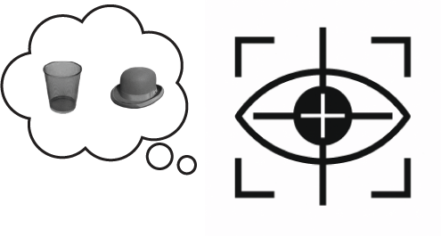

The brain’s oculomotor system is well-known for controlling our eye movements
that support perceptual attention. Interestingly, our work reveals that this same system also
contributes to selecting information hold in your mind, when there
is no need to move the eyes. Our work therefore implies that perceptual and internal selective
attention shared control mechanisms.

Working memory is often viewed as a passive buffer for holding past information. However, the ignored but more inherent function of the working memory, as well as the retained information, are serving the future (the coming task). Our research proves that internal memory representations are proactively shaped by upcoming task demands. Using behavioral and neural data, we track how the content and format of working memory evolve in real-time to support future actions. This work sheds light on the brain’s dynamic representational strategies — a core principle for building adaptive, goal-directed smart systems.
Even during steady fixation, our eyes make tiny involuntary movements
called microsaccades. We investigate how these movements impact EEG signals, revealing
that many neural modulations attributed to cognitive factors may in fact be linked to
subtle oculomotor dynamics. By integrating high-resolution eye-tracking with EEG, we
start to disentangle eye-related and cognition-related neural signals and appreciate
their complex interaction — highlighting the importance of multi-modal approaches in
understanding brain-behavior relationships.